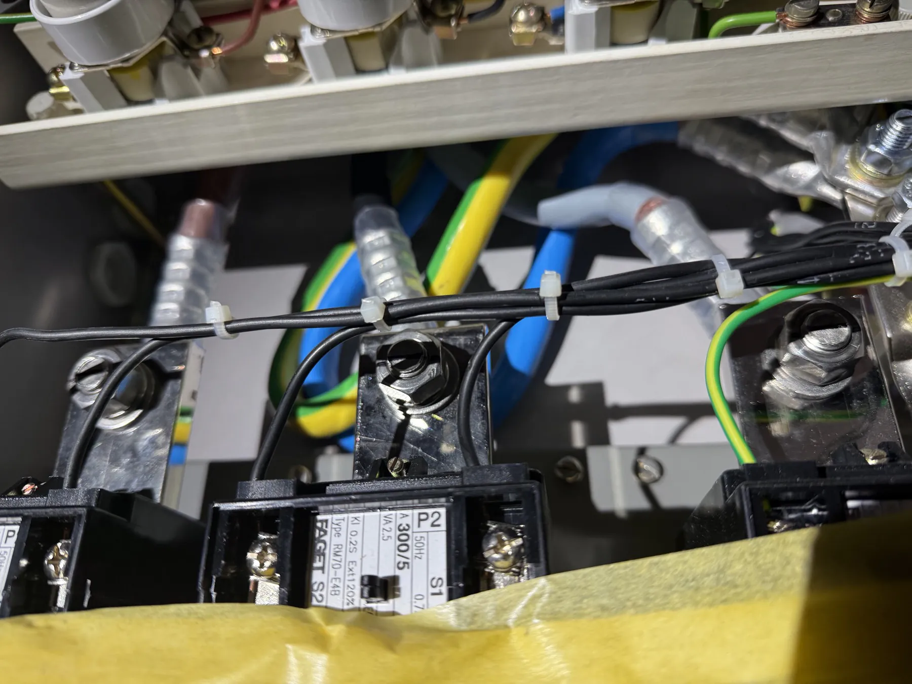
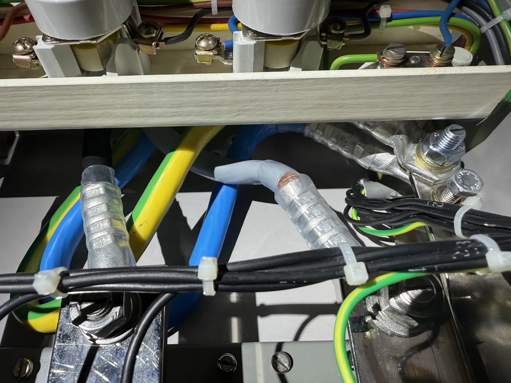
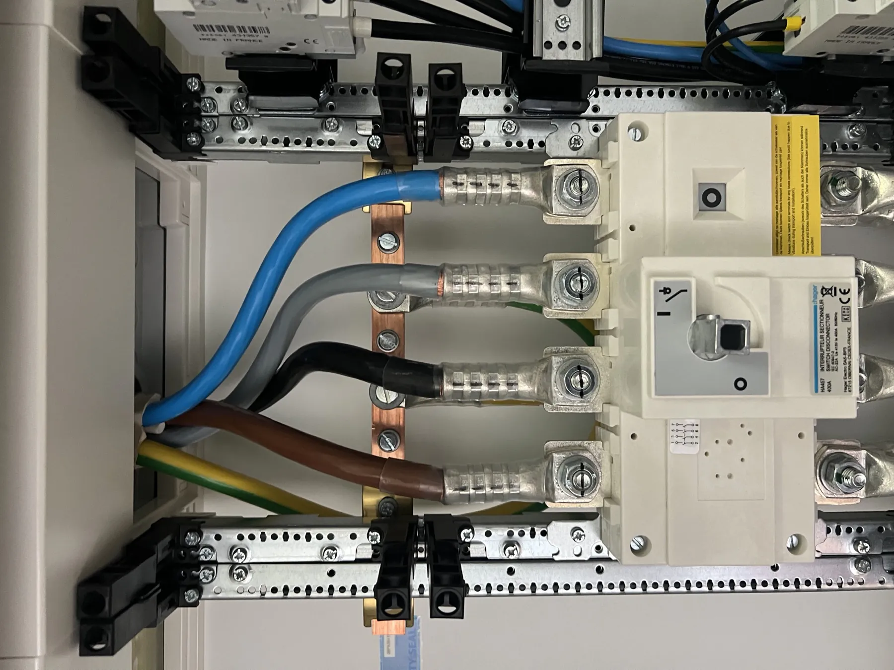

Opslag, opwek, laden en noodstroom in één pand.
Een kantoorpand van circa 4.500 m² aan de Hazenweg 61 in Hengelo, waar opslag, opwek, laden en noodstroom onder één energiemanagementsysteem samenkomen.
De uitdaging
Het kantoorpand aan de Hazenweg 61 in Hengelo werd in 2025 uitgebreid. De bestaande zonnepanelen lagen op een plek die daarvoor moest wijken, en de elektrische infrastructuur moest de nieuwe installaties aankunnen.
Wat Vibe deed
Vibe Energy bracht vier onderdelen onder één systeem: twee batterijsystemen van Dyness met samen 200 kW omvormervermogen, de bestaande zonnepanelen die zijn gedemonteerd en opnieuw gelegd op een nieuwe oost-west onderconstructie met een omvormer van 36 kW, twee laadstations van 22 kW met elk twee laadpunten, en een noodstroomaggregaat van AKSA. Een nieuwe hoofdverdeler verbindt het geheel. Het Vibe EMS stuurt alle onderdelen aan.
Op locatie
Locatiebeelden en de plaatsing van de installatie.



Het systeem op deze locatie.
Twee batterijsystemen
Dyness-opslag met samen 200 kW omvormervermogen.
Zonnedak opnieuw gelegd
Bestaande panelen gedemonteerd en herlegd op een oost-west onderconstructie, met een omvormer van 36 kW.
Vier laadpunten
Twee laadstations van 22 kW met elk twee aansluitingen.
Vibe EMS en noodstroom
Het EMS stuurt opslag, opwek en laden aan; een AKSA-aggregaat verzorgt de noodstroom.
En wie stuurt het aan?
De onderdelen hierboven leveren het vermogen; VIBE.CONTROL bepaalt per moment waar het heen gaat. Op deze locatie bewaakt de regelaar de grens van de aansluiting, geeft hij eigen opwek voorrang boven inkoop en wijkt optimalisatie altijd voor de bedrijfsvoering.
Na de oplevering blijft Vibe die strategie bijstellen. Een installatie die niet wordt bijgestuurd, levert na een jaar minder op dan op de dag van ingebruikname.
Over VIBE.CONTROLResultaat
Het systeem is in 2025 in fasen gerealiseerd en onafhankelijk geïnspecteerd volgens SCIOS Scope 10.
Vóór
- Een kantoorpand in uitbreiding, met een zonnedak dat moest wijken.
- Losse installaties zonder gezamenlijke sturing.
Na
- Opslag, opwek, laden en noodstroom onder één EMS.
- Een nieuwe hoofdverdeler die het geheel verbindt.
- Onafhankelijk geïnspecteerd volgens Scope 10.
Vier installaties, één sturing, één pand.
Vibe Energy · Hengelo, 2025Hoe dit project tot stand kwam.
Dezelfde vier stappen die wij op elke locatie doorlopen.
Meetdata
Het kwartiersprofiel van de aansluiting uitlezen, en vastleggen waar de piek zit en welke ruimte onbenut blijft.
Ontwerp
Dimensionering van de onderdelen, de opstelling op het terrein, de veiligheid en de rol die de sturing krijgt.
Realisatie
Plaatsing, netkoppeling en inbedrijfstelling, met één aanspreekpunt van begin tot eind.
Beheer
Monitoring, onderhoud en het bijstellen van de regelstrategie zolang de installatie in bedrijf is.

Een vergelijkbare situatie op uw locatie?
Stuur ons uw verbruiksgegevens en plannen. Wij rekenen door wat er binnen uw bestaande aansluiting mogelijk is.